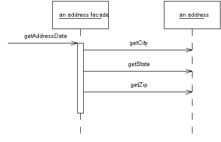
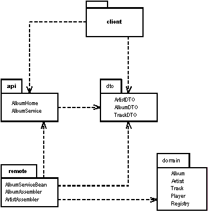
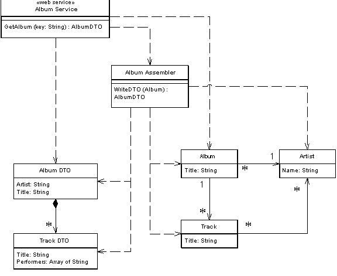

| Home | Articles | Talks | Links | Contact Me | ISA | ThoughtWorks |
Provides a coarse grained facade on fine grained objects to improve efficiency over a network.

In an object-oriented model, you do best with small objects that have small methods. This gives you lots of opportunity for control and substitution of behavior, and to use good intention revealing naming to help an application be easier to understand. So if you have an address object you would store and retrieve each piece of information individually. You have separate fields for the city, state, and zip code. You have separate getting methods to get this data, and separate setting methods to update this information. This allows the class to control updates easily, deciding to do special validation on a zip or determining a city automatically if the address only has a zip code. Other behaviors, such as determining if two addresses are within a few miles of each other, are also done on a fine grained basis. This allows clients to clearly ask for exactly the information and behavior they want.
One of the consequences of this fine grained behavior is that there is usually a lot of interaction between objects, and that interaction usually requires lots of method invocations. Within a single address space, this is no great issue. Method calls are cheap these days, and clever compilers and VMs can eliminate even this small cost. In the very few cases where it does make a difference, it's a small job to optimize.
But this happy state does not exist when you make calls between processes. Remote calls are much more expensive because there is a lot more to do. Data may have to be marshaled, security may need to be checked, packets may need to be routed through switches. If the two processes are running on machines on opposite sides of the globe, the speed of light may be a factor. The brutal truth is that any inter-process call is orders of magnitude more expensive than an in-process call - even if both processes are on the same machine. Such a performance effect cannot be ignored, even for us believers in lazy optimization.
As a result any object that's intended to be used as a remote object needs a coarse grained interface that minimizes the amount of calls needed to get something done. If you want to change the city, state, and zip of a remote address; you want to do this in one call. Not just does this affect your method calls, it also affects your objects. Rather than ask for an order and it's order lines individually, you need to access and update the order and order lines in a single call. This affects your entire object structure.
This coarse grained interfaces come with a price. You give up the clear intention and fine-grained control that you get with small objects and small methods. Programming becomes more difficult and your productivity slows.
You can't rely on clever middleware to solve your problem. I've seen many sellers of distributed objects say that you can just take a regular object model and add CORBA (for instance) to make the whole thing distributed in a simple step.They point out that with their powerful software you only pay the price of a remote call if the call is actually remote. So you can program fine grained objects and only pay a performance cost should you actually use them remotely.
Frankly, that doesn't wash. The point is that if you use a fine grained object remotely, it's performance will suck. If you use coarse-grained objects inside a process you lose productivity. There's no point taking a fine grained object and making it remotable just in case you want to call it remotely. Either it's a remote object or it isn't. The fundamental issue is that you need to have fine grained objects within a process and coarse grained objects between processes.
A Remote Facade is a coarse-grained facade over a web of fine-grained objects. None of the fine-grained objects have a remote interface and the Remote Facade does not contain any domain logic.
Remote Facade tackles the distribution problem by the standard OO approach of separating distinct responsibilities into different objects, and as a result has become the standard pattern for this problem. Firstly I recognize that fine-grained objects are the right answer for complex logic - so I ensure that any complex logic is placed in fine-grained objects which are designed to collaborate within a single process. To allow them to be accessed efficiently remotely I make a separate facade object to act as a remote interface. The facade, as the name implies, is merely a thin skin that switches from a coarse grained to a fine grained interface.
In a simple case, like an address object, a Remote Facade would replace all the getting and setting methods of the regular address object with one getter and one setter: often referred to as bulk accessors. When a client calls a bulk setting method, the address facade reads the data from the setting method and calls the individual accessors on the real address object (see Figure 1). The facade does nothing more than this. This way all the logic of validation and computation stays on the address object where it can factored cleanly and be used by other fine-grained objects.
Figure 1: One call to a facade causes several calls from the facade to the domain object
In a more complex case a single Remote Facade may act as a remote gateway for many fine-grained object. An order facade may be used to get and update information for an order, all its order lines, and maybe even some customer data as well.
In transferring information in bulk like this, you need to transfer this information in a form that can easily be moved over the wire. If your fine-grained classes are present on both sides of the connection, and these objects are serializable, then you can transfer the objects directly by making a copy. In this case a getAddressData
method would create a copy of the original address object. The setAddressData would receive an address object and use this address to update the data of the actual address object. (This assumes that the original address object needs to preserve its identity and thus can't be just replaced with the new address.)
Often, however you can't do this. You may not want to duplicate your domain classes on multiple processes. Often it's difficult to serialize a segment of a domain model due to its complicated relationship structure. The client may not want the whole model, just a simplified subset of it. In these cases it makes sense to use a Data Transfer Object as the basis of the transfer.
In the sketch, I've shown a Remote Facade that corresponds to a single domain object. While this is not uncommon and is easy to understand, it isn't the most usual case. A single Remote Facadewould have a number of methods each designed to pass on information from several objects. So getAddressData and setAddressData would be methods defined on a class like CustomerService which would also have methods along the lines of getPurchasingHistory and updateCreditData.
The question of granularity is one of the most tricky questions that comes up with Remote Facade. Some people like to make fairly small Remote Facades, such as one per use case. I prefer a coarser grained structure with much fewer Remote Facades. For even a moderate sized application I might have just a single Remote Facade. Even for a large application I may only have half a dozen Remote Facades. This means that each Remote Facade has a lot of methods, but since these methods are small I don't see this as a problem.
You design a Remote Facade based on the needs of a particular client usage. The most common example would be the need to view and update information through a user interface. In this case you might have a single Remote Facade for a family of screens with one bulk accessor method for loading and saving the data for each screen. Pressing buttons on a screen, to change a order's status, would invoke command methods on the facade. Quite often you'll have different methods on the Remote Facade that do pretty much the same thing on the underlying objects. This is common and reasonable. The facade is designed to make life simpler for external users, not the internal system, so if the client process thinks of it as a different command, it is a different command - even if it all goes to the same internal command.
Remote Facade can be stateful or stateless. A stateless Remote Facade can be pooled, and this can improve resource usage and improve performance, especially in a B2C situation. However if the interaction involves state across a session, then it needs to store session state somewhere using Client Session State or Database Session State or a some implementation of Server Session State. A stateful Remote Facade can hold onto its own state, which makes for an easy implementation of Server Session State. This may lead to performance issues when you have thousands of simultaneous users.
As well as providing a coarse-grained interface, several other responsibilities naturally go to the Remote Facade. The methods of a Remote Facade are a natural point to apply security. An access control list can say which users can invoke calls on which methods of a Remote Facade. The Remote Facade methods also are a natural point to apply transactional control. A Remote Facade method can start a transaction, do all the internal work and then commit the transaction at the end. Each call makes a good transaction since you don't want a transaction open when return goes back to the client, since transactions aren't built to be efficient for such long running cases.
Use Remote Facade whenever you need remote access to a fine-grained object model. By using Remote Facade you gain the advantages of a coarse grained interface while still keeping the advantage of fine grained objects. This gives you the best of both worlds.
The most common case of using this is between a presentation and a Domain Model where they may run on different processes. You'll get this between a swing UI and server domain model, or with a servlet and a server object model if the application and web servers are different processes.
If all your access is within a single process, then you don't need this kind of conversion. So I wouldn't use this pattern to communicate between a client Domain Model and its presentation nor between a CGI script and Domain Model that are running all in one web server. You don't tend to see Remote Facade used with a Transaction Script, since a Transaction Script is inherently a coarser grained structure.
Remote Facade's imply a synchronous, that is a remote procedure call style of distribution. Often you can greatly improve the responsiveness of an application by going with an asynchronous, message based style of remote communication. Indeed there are many compelling advantages for an asynchronous approach. Sadly discussion of asynchronous patterns is outside the scope of this book.
[Alur, Crupi, and Malks] discusses Session Facade in detail in the context of J2EE. Also take a look at Kyle Brown's Session Facade paper.
If you are working with the Enterprise Java platform, then a good choice for a distributed facade is a session bean. Session beans are remote objects, they may be stateful or stateless. In this example I'll run a bunch of plain old Java objects inside an EJB container and access them remotely through a session bean that's designed as a Remote Facade. Session Bean's aren't particularly complicated, so this example should make sense even if you haven't done any work with them before.
I feel the need for a couple of side notes here. Firstly I've been surprised by how many people seem to belive that you can't run plain objects inside an EJB container in Java. I hear the question "are the domain objects Entity Beans?". They can be entity beans (that's a separate question), but they don't have to be. Simple Java objects work just fine - as in this example.
My other side note is just to point out that this is not the only way to use a session bean. It can be used to host Transaction Scripts. I'll look at that usage elsewhere, in this case I'm using it as a Remote Facade.
In this example I'll look at remote interfaces to accessing information about music albums. The Domain Model consists of fine grained objects that represent an artist, and album, and tracks. Surrounding this are several other packages that provide the data sources for the application Figure 2.
Figure 2: Packages the remote interfaces
The dto package contains Data Transfer Objects that help us move data over the wire to the client. They have simple accessor behavior and also the ability to serialize themselves in binary or XML textual formats. In the remote package are assembler objects that will move data between the domain objects and the Data Transfer Objects. If you're interested in how this works see the discussion of Data Transfer Object.
To explain the facade I'll assume I can move data back and forth into Data Transfer Objects and concentrate on the remote interfaces. A single logical Java session bean has three actual classes. Two of these make up the remote API (and in fact are Java interfaces) the other is the class that implements the API. The two interfaces are the AlbumService itself and the home object: AlbumHome. The home object is used by the naming service to get access to the distributed facade, that's a detail on EJB that I'll skip over here.Our interest is in the Remote Facade itself: which is AlbumService. It's interface is declared in the API package to be used by the client, and is just a list of methods.
class AlbumService... String play(String id) throws RemoteException; String getAlbumXml(String id) throws RemoteException; AlbumDTO getAlbum(String id) throws RemoteException; void createAlbum(String id, String xml) throws RemoteException; void createAlbum(String id, AlbumDTO dto) throws RemoteException; void updateAlbum(String id, String xml) throws RemoteException; void updateAlbum(String id, AlbumDTO dto) throws RemoteException; void addArtistNamed(String id, String name) throws RemoteException; void addArtist(String id, String xml) throws RemoteException; void addArtist(String id, ArtistDTO dto) throws RemoteException; ArtistDTO getArtist(String id) throws RemoteException;
You'll notice that even in this short example, I see methods for a two different classes in the Domain Model: artist and album. I also see minor variations on the same method. Methods have variants that use either the Data Transfer Object or an XML string to move data into the remote service. This allows the client to choose which form to use depending on the nature of the client and of the connection. As you can see, for even a small application this can lead to many methods on AlbumService.
Fortunately the methods themselves are very simple. Here are the ones for manipulating albums.
class AlbumServiceBean...
public AlbumDTO getAlbum(String id) throws RemoteException {
return new AlbumAssembler().writeDTO(Registry.findAlbum(id));
}
public String getAlbumXml(String id) throws RemoteException {
AlbumDTO dto = new AlbumAssembler().writeDTO(Registry.findAlbum(id));
return dto.toXmlString();
}
public void createAlbum(String id, AlbumDTO dto) throws RemoteException {
new AlbumAssembler().createAlbum(id, dto);
}
public void createAlbum(String id, String xml) throws RemoteException {
AlbumDTO dto = AlbumDTO.readXmlString(xml);
new AlbumAssembler().createAlbum(id, dto);
}
public void updateAlbum(String id, AlbumDTO dto) throws RemoteException {
new AlbumAssembler().updateAlbum(id, dto);
}
public void updateAlbum(String id, String xml) throws RemoteException {
AlbumDTO dto = AlbumDTO.readXmlString(xml);
new AlbumAssembler().updateAlbum(id, dto);
}
As you can see, each method really does nothing more than delegate to another object, so each method is only a line or two in length (ignoring the noise of the try/catch blocks). This small example illustrates pretty nicely what a distributed facade should look like: a long list of very short methods with very little logic in them. The facade then is nothing more than a packaging mechanism - which is as it should be.
We'll just finish with a few words on testing. It's very useful to be able to do as much testing as possible in a single process. In this case I can do this by writing tests for the session bean implementation directly: these can be run without deploying to the EJB container.
class XmlTester...
private AlbumDTO kob;
private AlbumDTO newkob;
private AlbumServiceBean facade = new AlbumServiceBean();
protected void setUp() throws Exception {
facade.initializeForTesting();
kob = facade.getAlbum("kob");
Writer buffer = new StringWriter();
kob.toXmlString(buffer);
newkob = AlbumDTO.readXmlString(new StringReader(buffer.toString()));
}
public void testArtist() {
assertEquals(kob.getArtist(), newkob.getArtist());
}
This is one of the jUnit tests to be run in-memory. It shows how I can create an instance of the session bean outside the container and run tests on it. This allows for a faster testing turn-around time.
I was talking over this book with Mike Hendrickson, my editor at Addison-Wesley. Ever alert to the latest buzzwords, he asked me if I'd got anything about web services in it. I'm actually loath to rush to every fashion in these books, after due to the languid pace of book publishing any latest fashion that I write about will seem quaint by the time you read it. But it's a good example of how core patterns so often keep their value even with the latest technological flip-flops.
At it's heart a web service is nothing more than an interface for remote usage. As such the basic advice of Remote Facade still holds: build your functionality in a fine-grained manner, and then layer a Remote Facade over the fine-grained model in order to handle web services.
For the example, I'll the same basic problem as I described above, concentrating just on the request for information about a single album. Figure 3 shows the various classes that take part. They fall into the familiar groups: Album Service is the Remote Facade, two Data Transfer Objects, three objects in a Domain Model and an assembler to pull data from the Domain Model into the Data Transfer Objects.
Figure 3: Classes for the album web service
The Domain Model is absurdly simple, indeed for this kind of problem you'd be better off using a Table Data Gateway to create the Data Transfer Objects directly - but that would rather spoil the example of showing a Remote Facade over a domain model.
class Album...
public String Title;
public Artist Artist;
public IList Tracks {
get {return ArrayList.ReadOnly(tracksData);}
}
public void AddTrack (Track arg) {
tracksData.Add(arg);
}
public void RemoveTrack (Track arg) {
tracksData.Remove(arg);
}
private IList tracksData = new ArrayList();
class Artist... public String Name;
class Track...
public String Title;
public IList Performers {
get {return ArrayList.ReadOnly(performersData);}
}
public void AddPerformer (Artist arg) {
performersData.Add(arg);
}
public void RemovePerformer (Artist arg) {
performersData.Remove(arg);
}
private IList performersData = new ArrayList();
I use Data Transfer Objects for passing the data over the wire. These are just data holders which flatten the structure for the purposes of the web service.
class AlbumDTO... public String Title; public String Artist; public TrackDTO[] Tracks;
class TrackDTO... public String Title; public String[] Performers;
Since this is .NET, I don't need to write any code to serialize and restore into XML. The .NET framework comes with the appropriate serializer class to do the job.
Since this is a web service, I also need to declare the structure of the Data Transfer Objects in WSDL. The Visual Studio tools will generate the WSDL for me, and I'm a lazy kind of guy, so I'll let it do that. Here's the XML Schema definition that corresponds to the Data Transfer Objects.
<s:complexType name="AlbumDTO"> <s:sequence> <s:element minOccurs="1" maxOccurs="1" name="Title" nillable="true" type="s:string" /> <s:element minOccurs="1" maxOccurs="1" name="Artist" nillable="true" type="s:string" /> <s:element minOccurs="1" maxOccurs="1" name="Tracks" nillable="true" type="s0:ArrayOfTrackDTO" /> </s:sequence> </s:complexType> <s:complexType name="ArrayOfTrackDTO"> <s:sequence> <s:element minOccurs="0" maxOccurs="unbounded" name="TrackDTO" nillable="true" type="s0:TrackDTO" /> </s:sequence> </s:complexType> <s:complexType name="TrackDTO"> <s:sequence> <s:element minOccurs="1" maxOccurs="1" name="Title" nillable="true" type="s:string" /> <s:element minOccurs="1" maxOccurs="1" name="Performers" nillable="true" type="s0:ArrayOfString" /> </s:sequence> </s:complexType> <s:complexType name="ArrayOfString"> <s:sequence> <s:element minOccurs="0" maxOccurs="unbounded" name="string" nillable="true" type="s:string" /> </s:sequence> </s:complexType>
Being XML, it's a particularly verbose form of data structure definition, but it does the job.
To get the data from the Domain Model to the Data Transfer Object I need an assembler.
class AlbumAssembler...
public AlbumDTO WriteDTO (Album subject) {
AlbumDTO result = new AlbumDTO();
result.Artist = subject.Artist.Name;
result.Title = subject.Title;
ArrayList trackList = new ArrayList();
foreach (Track t in subject.Tracks)
trackList.Add (WriteTrack(t));
result.Tracks = (TrackDTO[]) trackList.ToArray(typeof(TrackDTO));
return result;
}
public TrackDTO WriteTrack (Track subject) {
TrackDTO result = new TrackDTO();
result.Title = subject.Title;
result.Performers = new String[subject.Performers.Count];
ArrayList performerList = new ArrayList();
foreach (Artist a in subject.Performers)
performerList.Add (a.Name);
result.Performers = (String[]) performerList.ToArray(typeof (String));
return result;
}
The last piece we need is the service definition itself. This comes first from the C# class.
class AlbumService...
[ WebMethod ]
public AlbumDTO GetAlbum(String key) {
Album result = new AlbumFinder()[key];
if (result == null)
throw new SoapException ("unable to find album with key: " +
key, SoapException.ClientFaultCode);
else return new AlbumAssembler().WriteDTO(result);
}
Of course, this isn't the real interface definition - that comes from the WSDL file. Here are the relevant bits
<portType name="AlbumServiceSoap"> <operation name="GetAlbum"> <input message="s0:GetAlbumSoapIn" /> <output message="s0:GetAlbumSoapOut" /> </operation> </portType> <message name="GetAlbumSoapIn"> <part name="parameters" element="s0:GetAlbum" /> </message> <message name="GetAlbumSoapOut"> <part name="parameters" element="s0:GetAlbumResponse" /> </message> <s:element name="GetAlbum"> <s:complexType> <s:sequence> <s:element minOccurs="1" maxOccurs="1" name="key" nillable="true" type="s:string" /> </s:sequence> </s:complexType> </s:element> <s:element name="GetAlbumResponse"> <s:complexType> <s:sequence> <s:element minOccurs="1" maxOccurs="1" name="GetAlbumResult" nillable="true" type="s0:AlbumDTO" /> </s:sequence> </s:complexType> </s:element>
As expected, WSDL is rather more garrulous than your average politician, but unlike so many of them - it does get the job done. I can now invoke the service by sending a SOAP message of the form
<?xml version="1.0" encoding="utf-8"?> <soap:Envelope xmlns:xsi="http://www.w3.org/2001/XMLSchema-instance" xmlns:xsd="http://www.w3.org/2001/XMLSchema" xmlns:soap="http://schemas.xmlsoap.org/soap/envelope/"> <soap:Body> <GetAlbum xmlns="http://martinfowler.com"> <key>aKeyString</key> </GetAlbum> </soap:Body> </soap:Envelope>
The important thing to remember about this example isn't the cool gyrations with SOAP and .NET, but the fundamental layering approach. Design an application without distribution, then layer the distribution ability on top of that with Remote Facades and Data Transfer Objects.
 |  |
{kind=link}
{kind=link}
{kind=link}